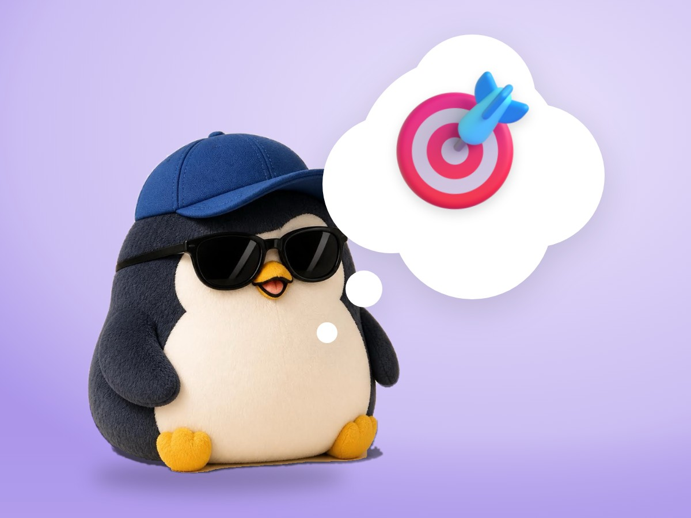

📝 DRAFT · 下書き — まだ本番に出していません · 下書き一覧
🐧 EVERYDAY LIFE⚡ 20 SEC
Use your time on things you can change, not things you can't 🎯

Two Circles
In the book "The 7 Habits," there is a story about 2 circles.
Outer Circle
The outer circle is things I cannot change, like the weather and the news.
Inner Circle
The inner circle is things I can change, like my actions and my talks with my family.
⚡ TRY IT
Sort into 2 circles
Can't change
Can change
🌦️ Tomorrow's weather
🚶 What I do today
📺 The news
📖 Reading a helpful book
📱 Other people's posts
☎️ A chat with my family
Which circle is it in?
✨ Nice!
🤔 Hmm, maybe the other circle.
🌱 All sorted! Look, the inner circle grew. Spend your time there.
Sorted: 0 / 6
Fuller Days
It is said people who use their time on the inner circle have fuller days.
📚 I learned this from the Japanese blog "Panda no Ondo".